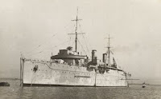
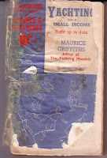
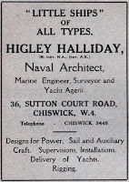
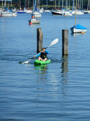
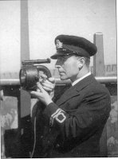
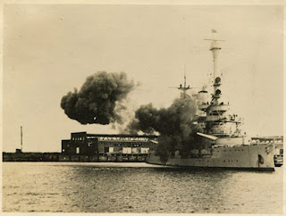

On September 3rd 1939 therefore he was hurrying north to join the submarine depot ship HMS Forth at Rosyth. The Forth was a floating workshop, a hotel, an operational centre. She had a crew of over 1,100 men, displacement 8,999 tons and was armed with 16 AA guns. Quite a contrast with the trim little pleasure yacht he had just left.
 |
| HMS Forth |
{kind=link}
Both vessels had been launched during 1938 but whereas HMS Forth had been built by the
internationally famous John Brown
shipyard on Clydebank, Naromis was a
product of the Norfolk Broads. Her designer, 'Higley' Halliday (Edmund Walter), was a founder member of the Little Ship Club,
established in 1926. The club was part of a
movement to establish better facilities and training for yachtsmen and to open
up the sport to a wider range of people. ‘Bachelor girls’ were welcome.
Some of these early Little Ship Club members might have been among the hundreds who had already bought Yachting on a
Small Income by another of the Little Ship Club founders, the newly
appointed editor of Yachting Monthly
magazine, Maurice Griffiths. By the time my mother’s read-to-pieces sixpenny
reprint copy was published (c1939-40) these hundreds had teemed into thousands.
 |
| My mother bought her copy immediately after the war - and then she bought her boat |
{kind=link}
In his introduction to this new edition Griffiths looks back to the 20s: ‘There was a time
when a man who owned a small boat brought her into the conversation on every
conceivable occasion referring to her with loud nonchalance as “my yacht” or
else avoided all reference to anything that floated for fear his acquaintances
might imagine he was secretly wealthy and try to borrow £5.
'When this little handbook was first published
in 1925 the Public at large – and that means you, the “man in the street” –
thought of yachts solely as those expensive white things that fluttered around
in the Solent and cost someone hundreds a year to run. Nowadays, such has been
the publicity of the Yachting Press and even of the Daily Press in reporting
round-the-world voyages in small sailing craft by bank clerks, shop assistants
and the out-of-works, that the possibilities of spending thoroughly enjoyable
weekends and holidays afloat and in one’s own little floating home on even a
bank clerk’s salary have become more widely known.’
 |
| The website MY Seren is authoritative on this designer and his work |
{kind=link}
He goes on to talk about the continuing improvements in
facilities of yachtsmen, including the Little Ship Club, where Higley Halliday had
become Chief Seamanship Instructor. There’s a (newly added?) chapter on The
Feminine Owner’ ‘Your joining a yacht club will probably result in your being
introduced to others like yourself who are keen to sail but have not the nerve
to go it alone.’ This, Griffiths concludes ‘is now the day of the Little Ship
and as every year passes her numbers increase like a penfull of rabbits.’
 |
| I didn't include my oldest grandson's small ship in my total |
{kind=link}
Hmmm,
I thought, as I read this…My mother bought this book: subsequently she decided
to follow Griffiths’s advice and buy a boat. In so doing she met my father – a
yacht agent. That resulted in myself, my 2 brothers and (at my most recent
count) NINETEEN small, medium and very small ships in our family … so who needs rabbits?
On September 3rd
1939 my mother, aged 15, was in church with her mother. She remembered
the vicar sharing Chamberlain’s 11.30am announcement and then her mother’s
desperate haste to get home to her husband and their family of boys. My
grandmother had been a Red Cross nurse in the First World War; she would have
felt a justifiable horror what might be about to happen to her family now. Almost all except the youngest children did serve, but their WW2 service was different from their WW1 father and uncles – the majority were with the
RAF, mechanised regiments or, in one case, survived the BEF to join a commando
unit. Mum was in a munitions factory and a branch of the Foreign Office where
they were doing something so secret she never quite worked out what it was,
except that it was in some way connected with Bletchley Park and her job was to
make the tea, do the filing and ask no questions.
 |
| Maurice Griffiths RNV(S)R |
{kind=link}
My father’s trip on Naromis
was probably intended as 'training'. Someone from the RNV(S)R London Division had
got in touch not long after he volunteered: ‘Crocker suggests I go to Danzig and pay 9 gns.’ (Diary
1.8.1939) Danzig (Gdansk) was
not, however, a place where you’d want to find yourself in September 1939. The German
Battleship Schleswig Holstein had
arrived there on a 'courtesy visit' on August 26th - by which time (fortunately for my future existence) Naromis had been escorted out of German waters by a mine-layer and
was hurrying home via Sweden and Norway. Early in the morning of September 1st
the Schleswig Holstein opened fire on
the Free City and German troops poured across the Polish border. Naromis, meanwhile, having travelled
1300 sea miles in 3 weeks without mishap, ran aground on a beach in Yorkshire: ‘It had one saving grace, a well-built pub. It was here that
we heard the news of Germany’s attack on Poland and the phrase “German troops
moved across the frontier at dawn” that was to become so well-known during the
next twenty months.’ (Naromis p 91)
 |
| Battleship Schleswig Holstein, Danzig / Gdansk 1.9.1939 |
{kind=link}
Not everyone in my audience at the Little Ship Club on September
3rd 2019 had made the connection with Sept 3rd 1939. That’s understandable as we all have our personal significant dates (also our attention might possibly have been
diverted that week by other Europe-related issues). But where were your parents – or grandparents – on September 3rd 1939? And
what happened to them next?
(My RNV(S)R research isn't over yet -- if you can contribute, please let me know sokens@aol.com)
| As a thank-you for its RNV(S)R work Little Ship Club members are allowed to 'deface' their ensign |
{kind=link}